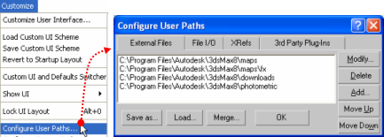
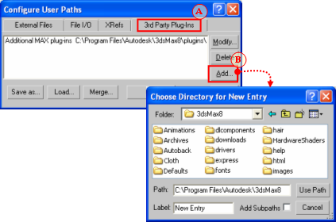
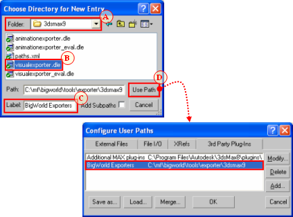
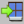
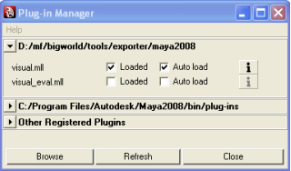
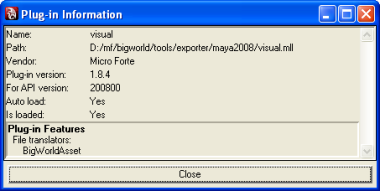

Table of Contents
BigWorld offers plug-ins that allow you to export geometry and animation data from 3ds Max and Maya to the formats used by the game engine.
BigWorld offers plug-ins for exporting visuals and animations, supporting 3ds Max versions 2008, 2009, 2010 and 2011.
The 3ds Max visual exporter is a plug-in that exports mesh data to the .visual format used by the BigWorld engine.
It exports meshes, physiqued meshes, skinned meshes, transform nodes, morph targets, BSP trees, hard points, and portals, and can also generate tangents and binormals for normal mapping.
In order to access the Visual Export plug-in, set the Select File To Export dialog box's Save As Type drop-down list box to Visual Exporter (*.VISUAL), as illustrated below:
Accessing the Visual Export plug-in in 3ds Max
Note
For unskinned meshes Visual Exporter can automatically select a 32-bit index buffers if there are more than 65355 vertices in the model. However, skinned meshes are limited to 65355 vertices.
The client engine can load both 16- and 32-bit index buffers automatically, but some low-end graphic cards do not support the latter. On those cards, objects with 32-bit index buffer will not render.
The components of the Visual Exporter and Advanced Settings dialog boxes are described below:
-
Visual type
Type of visual being exported, and hence what kind of information to save.
-
Animated, skinned
Specifies that the plug-in should export everything as is, i.e., every piece should be exported as a separate object, and all transform nodes and morph targets should be exported.
This option should only be used for visuals that have moving parts rigged with physique, skinned, or separate moving parts.
This option does not generate BSP trees from the meshes. If you want to have a (static) BSP tree for an animated object, then you will have to create a custom one.
-
Static
Specifies that the plug-in should combine all meshes into one, discarding all transform nodes and modifiers, and generating a BSP tree for the combined mesh (unless there is a custom one in the current scene).
This option should be used for shells and other static objects placed in the scene.
-
Static with nodes
Specifies that the plug-in should combine all meshes into one, exporting all transform nodes.
This option is similar to Static, except that it will export all transform nodes for the scene.
-
Mesh particles
Specifies that the plug-in should allow these meshes to be sorted when rendered, so that alpha blending works correctly. Each individual object in the scene is exported as one particle, in the format used by the mesh particle renderer.
There is a limit of 17 particle meshes exported for each mesh particle object.
Visuals exported using this option can be used as a particle system in ParticleEditor. For details, see Renderer Properties sub-panel.
-
-
Allow scale
Indicates that the transform nodes should be exported with scale.
This is generally not necessary, and should only be used if you want to export animations that include scale.
-
Normal mapped
Specifies that the plug-in should create additional data to be used for normal-mapping the model.
This option must be checked to use a normal-mapped material on the model.
-
Keep existing materials
Specifies that the plug-in should keep changes made to the material in ModelEditor.
This option must be checked if you are overwriting a previously exported model, and want to keep material changes made in ModelEditor.
-
Snap vertices
Specifies that the plug-in should snap the vertices of all geometry to the nearest tenth of a millimetre.
This option has been added primarily to support the new use of portals — because the grid and axis alignment restrictions have been removed for portals, snapping portals to the nearest tenth of a millimetre can pull portals off bounding box or hull boundaries.
This option does not affect geometry exported when the Visual Type drop-down list box is set to Animated.
-
Advanced Settings dialog
-
Bone count
Specifies the number of bones used by the Visual Splitter to divide up any mesh.
It is set to a default of 17 because all BigWorld skinned shaders are designed to use a maximum of 17 bones. When a visual file uses more than 17 bones, the Visual Splitter divides the object into 17, or less, bone segments.
Only change this field if you have created shaders that support a different number of bones.
The field's maximum value is 87, which is the upper limit of BigWorld vertex format.
-
Disable visual checker
Specifies that the plug-in should not check the exported model against the visual rules. A
-
Fix cylindrical mapping
Specifies that the plug-in should try to use an alternative method for generating texture space vectors used for normal mapping.
This option must be checked if there are artifacts along seams when using normal-mapped shaders.
-
Opposite facing direction
Specifies that the model has been modelled facing in the incorrect direction and that it should be rotated by 180 degrees so that is appears correctly inside the engine.
-
A — The rules are defined in bigworld/tools/res/visual_rules.xml. For details, see Validation rules.
The plug-in automatically generates the file visualexporter.cfg, under 3ds Max's folder plugcfg.
The list below describes the configuration options written to this file:
-
allowScale
Last value set for the Allow Scale check box in the exporter dialog box.
-
bumpMapped
Last value set for the Bumpmapped check box in the exporter dialog box.
-
exportMode
Last export mode used in the exporter dialog box.
-
unitScale
Conversion factor for units between 3ds Max and BigWorld.
The default value is 0.1, which means that 1 unit in 3ds Max equals 0.1 units in BigWorld.
It is important to note that you need to change this value in both animationexporter.cfg and visualexporter.cfg.
This configuration option can be set only in the configuration files.
The 3ds Max Animation Exporter is a plug-in that exports animations to the .animation format used by the BigWorld engine.
It supports exporting of node and morph animations (using the morpher modifier).
To access the Animation Export plug-in, in the Select File To Export dialog box set the Save As Type drop-down list box to Animation Exporter (*.ANIMATION), as illustrated below:
Accessing the Animation Export plug-in in 3ds Max
The list below describes the components of the Visual Exporter dialog box:
-
Allow scale
Indicates that the animation should be exported with scale keys in it.
If you wish to use scaling animations, you have to export the visual you want to animate with this option enabled as well. For more details, see 3ds Max visual exporter.
This option only applies to node animation.
-
Export morph animation
Indicates that morph animations should be exported.
-
Export node animation
Indicates that node animations should be exported.
-
Use reference hierarchy
Indicates that the animation should be exported with a node hierarchy different from the one in the current 3ds Max file.
Once this option is selected, the Select Reference Hierarchy File dialog box is displayed, where you can select the visual file with the desired node hierarchy.
For details, see Exporting custom node hierarchy.
-
Export cue track
Not supported for this version.
-
Opposite facing direction
Specifies that the model has been modelled facing in the incorrect direction and that it should be rotated by 180 degrees so that is appears correctly inside the engine.
The plug-in automatically generates the file animationexporter.cfg, under 3ds Max's folder plugcfg.
The list below describes the configuration options written to this file:
-
allowScale
Last value set for the Allow Scale check box in the exporter dialog box.
-
exportMorphAnimation
Last value set for the Export Morph Animation check box in the exporter dialog box.
-
exportNodeAnimation
Last value set for the Export Node Animation check box in the exporter dialog box.
-
referenceNodesFile
Last reference nodes file used for exporting animation.
-
unitScale
Conversion factor for units between 3ds Max and BigWorld.
The default value is 0.1, which means that 1 unit in 3ds Max equals 0.1 units in BigWorld.
It is important to note that you need to change this value in both animationexporter.cfg and visualexporter.cfg.
This configuration option can be set only in the configuration files.
The list below gives an overview of the data supported by the plug-in:
-
BSP tree
If the selected option in Visual Exporter dialog box's Visual Type group box is either Static or Static With Nodes, then BSP trees are generated from the exported object.
It is also possible to define a custom BSP tree, by postfixing an object name with '_bsp'. If a custom BSP tree exists, then a new one will not be generated from the exported object.
-
Hard point
All nodes having the name prefixed by 'HP_' will be exported as a hard point (hard points are attachment points for joining two models).
Except for the transform node, no object will be exported for a hard point.
-
Material
If a standard 3ds Max material is applied to an object, then the identifier, the diffuse map, and the self-illumination factors of the material will be exported.
If a DirectX 9 shader material is applied to a model, then the properties and the shader name referenced by the material will be exported.
When exporting an existing visual, the plug-in tries to keep its material settings.
-
Mesh
Meshes in the current set will be exported according to the selected option in the Visual Exporter dialog box's Visual Type group box.
If Visual Type is set to Animated, then the plug-in will also export any morpher, skin, and physique modifiers applied to the object.
-
Node
If the selected option in Visual Exporter dialog box's Visual Type group box is either Animated or Static With Nodes, then all transform nodes in the current set will be exported.
-
Portal
Portals are generally a single Quad with the surface normal pointing toward the main body of the shell that it is part of.
The type of portal to export is defined by editing the user properties of the object in 3ds Max. To define it, follow the steps below:
-
Right-click the object.
-
In the context menu, click Properties.
-
In the Object Properties dialog box, click the User Defined tab.
-
In the multi-line field User-Defined Properties, enter the value according to the type of portal, as described in the list below:
-
Portal type: Standard
Used to link two shells together in WorldEditor.
-
User-defined properties:
portal=true
-
-
Portal type: Exit
Used to link the outside world to a shell.
-
User-defined properties:
portal=true exit=true
-
-
Portal type: Heaven
Lets you see the outside world from an inside chunk.
-
User-defined properties:
portal=true exit=true heaven=true
-
-
-
The proprietary 3ds Max exporters are provided for 3ds Max versions 2008, 2009, 2010 and 2011, and can be found in the folder bigworld\tools\exporter
To install the 3ds Max exporter, follow the steps below:
-
Open 3ds Max.
-
Open the Configure System Paths dialog box:
On 3ds Max 2008, 2009, 2010 and 2011, select the Customize → Configure System Paths menu item.
Invoking the Configure User Paths dialog box
-
On the Configure System Paths dialog box:
-
Click the 3rd Party Plug-Ins tab.
-
Click the Add button — the Choose Directory For New Entry dialog box will open.
Invoking the Choose Directory For New Entry dialog box
-
-
On the Choose Directory For New Entry dialog box:
-
On the Folder drop-down list, select the folder containing the BigWorld exporter plug-in for your 3ds Max version, e.g. bigworld\tools\exporter\3dsmax2011.
-
On the file list, select visualexporter.dle.
-
On the Label field, type 'BigWorld exporters'.
-
Click the Use Path button — the Configure System Paths dialog box will be reactivated, listing BigWorld's exporter plug-in.
Setting the Choose Directory For New Entry dialog box
-
The BigWorld plug-in allows you to export Maya visual and animations created with versions 2008, 2009, 2010 and 2011.
Its features and installation steps are described in the sub-sections below.
The Maya Visual and Animation Exporter is a plug-in that exports mesh and animation data respectively to the .visual and .animation formats used by the BigWorld engine.
The visual exporter portion exports meshes, skinned meshes, transform nodes, BSP trees, hard points, portals and morph targets, and can also generate tangents and binormals for normal mapping. The animation exporter portion exports node animations and morph animations.
This version supports:
-
Static Models
-
Static Models with Nodes
-
Normal Models
-
Animations
-
Mesh Particles
-
Custom BSPs
-
Custom Hulls
-
Bump Mapping
-
Morph Targets and Animation
-
Custom node hierarchies.
In order to access the Visual and Animation Exporter plug-in, set the Export dialog box's Files Of Type drop-down list box to BigWorld Asset (*.*), as illustrated below:
Invoking the Visual and Animation Exporter plug-in
The list below describes the components of the Export All Options dialog box:
-
Export
Sets the type of file being exported.
-
Visual
Specifies that the objects should be saved into a .visual file.
-
Animation
Specifies that the objects should be saved into a .animation file.
-
-
Visual type
Sets the type of visual being exported, and hence what information to save.
-
Animated, skinned
Specifies that the plug-in should export everything as is, i.e., every piece should be exported as a separate object, and all transform nodes and morph targets should be exported.
This option should only be used for visuals that have moving parts, either skinned or separate moving parts.
This option does not generate BSP trees from the meshes. If you want a (static) BSP tree for an animated object, then you will have to create a custom one.
-
Static
Specifies that the plug-in should combine all meshes into one, discarding all transform nodes and modifiers, and generating a BSP tree for the combined mesh (unless there is a custom one in the current scene).
This option should be used for shells and other static objects placed in the scene.
-
Static with nodes
Specifies that the plug-in should combine all meshes into one, exporting all transform nodes.
This option is similar to the option Static, except in that it will export all transform nodes for the scene
-
Mesh particles
Specifies that the plug-in should allow these meshes to be sorted when rendered, so that alpha blending works correctly. Each individual object in the scene is exported as one particle, in the format used by the mesh particle renderer.
There is a limit of 17 particle meshes exported for each mesh particle object.
Visuals exported using this option can be used as a particle system in ParticleEditor. For details, see Renderer Properties sub-panel.
-
-
Allow scale
Indicates that the object should be exported with scale keys in it.
If you wish to use scaling animations, then you have to export both the visual and the animation with this option enabled.
-
Normal mapped
Specifies that the plug-in should create additional data to be used for normal-mapping the model.
This option must be checked to use a normal-mapped material on the model.
-
Keep existing materials
Specifies that the plug-in should keep changes to material made in ModelEditor.
This option must be checked if you are overwriting a previously exported model, and want to keep material changes made in ModelEditor.
-
Use reference node
Indicates that the animation should be exported with a node hierarchy different from the one in the current Maya file.
Once this option is checked, the Select Reference Hierarchy File dialog box is displayed, where you can select the visual file with the desired node hierarchy. For more details, see Exporting custom node hierarchy.
-
Snap vertices
Specifies that the plug-in should snap the vertices of all geometry to the nearest tenth of a millimetre.
This option has been added primarily to support the new use of portals — because the grid and axis alignment restrictions have been removed for portals, snapping portals to the nearest tenth of a millimetre can pull portals off bounding box or hull boundaries.
This option does not affect geometry exported when the Visual Type drop-down list box is set to Animated.
-
Strip reference prefix
Specifies that the plug-in should strip the model name prefix from the names of the animation nodes when using referenced models inside Maya.
When animating a model in Maya that uses a reference to a rigged model, the name of the model will be prefixed to the name of each animated node. As a result the node names of the original model will not match those of the animation, so the animation will not affect the model. By selecting this option, the model name will be stripped from the names of the animation nodes so that the node names in the visual file match those in the animation file.
-
Advanced Settings dialog
-
Bone count
Specifies the number of bones used by the Visual Splitter to divide any mesh up.
It is set to a default of 17 because that is the maximum that all BigWorld skinned shaders are designed to use. When a visual file uses more than 17 bones, the Visual splitter divides the object into 17 or less bone segments.
Only change this field if you have created shaders that support a different number of bones.
The field's maximum value is 87, which is the upper limit of BigWorld vertex format.
-
Use decimetres
Specifies that Maya units are interpreted as decimetres (1 unit = 10 decimetres) rather than metres.
-
Disable visual checker
Specifies that the plug-in should not check the exported model against the visual rules. A
-
Fix cylindrical mapping
Specifies that the plug-in should try to use an alternative method for generating texture space vectors used for normal mapping.
This option must be checked if there are artifacts along seams when using normal-mapped shaders.
-
Opposite facing direction
Specifies that the model has been modelled facing in the incorrect direction and that it should be rotated by 180 degrees so that is appears correctly inside the engine.
-
Scene root added
Specifies that the model already has a dummy scene root added by the artist. If not selected, a scene root will be added automatically so that the correct node gets examined as the itinerant when testing for the “Is Movement” action inside the BigWorld engine. This option provides support for customers with manually added dummy scene roots, therefore not requiring assets to be altered.
-
A — The rules are defined in file bigworld/tools/res/visual_rules.xml. For details, see Validation rules.
The BigWorld Shelf contains useful shortcuts for working with shells.
These icons are described in the list below:
-
 — Adds the Portal attribute to the
object's face currently selected.
— Adds the Portal attribute to the
object's face currently selected.
-
— Adds the Exit attribute to the object's face currently selected.
-
 — Adds the Heaven attribute to the object's face currently selected.
The requirements for creating in 3ds Max the game assets to be used in BigWorld Technology are covered in the document Content Creation Manual (accessible via WorldEditor's, ModelEditor's, and ParticleEditor's Help → Content Creation menu item, or directly by opening the bigworld/doc/content_creation.chm file).
But there is a major difference between 3ds Max and Maya in the creation of portals. To create a portal in Maya, follow the steps below:
-
Create a face on your shell model covering the area of the portal.
-
Ensure the normals for the portal are facing outwards from the shell.
-
Extract the face from the rest of the shell model.
-
Apply the portal attribute (and heaven and exit attributes, if applicable).
-
If the portal is not being recognised, then try the steps below:
-
Recreate your portal, based on a face extracted from the shell model.
-
Centre the pivot point of the portal plane.
-
Ensure that the transforms for the shell and portal are all zeroed.
-
In order to use the plug-in, you need to update your environment variables and Maya's plug-in settings. To do that, follow the steps below:
Note
The steps below are the same for all supported versions of Maya, only folder names for the latest version of Maya are shown-
Add the BigWorld exporter folder as an additional plugin path to Maya:
-
Open Maya.env, e.g. My Documents/maya/2011/Maya.env.
-
Add the BigWorld exporter path to the MAYA_PLUG_IN_PATH variable, e.g. MAYA_PLUG_IN_PATH = C:/mf/bigworld/tools/exporter/maya2011.
Note
Each installed version of Maya can point to its appropriate version of the BigWorld exporters.
-
-
Copy the BigWorld's export script to the Maya folder:
-
Open Windows Explorer.
-
Navigate to the folder bigworld/tools/exporter/maya2011.
-
Select the visualfileexporterscript.mel file.
-
Copy the file to the My Documents/maya/2011/scripts folder.
-
-
Copy BigWorld's shelf and its icons to Maya folder:
-
Open Windows Explorer.
-
Navigate to the folder bigworld/tools/exporter/maya2011.
-
Select the shelf_bigworld.mel file.
-
Copy the file to the My Documents/maya/2011/prefs/shelves folder.
-
Navigate to the folder bigworld/tools/exporter/maya2011.
-
Select the bitmap files exit_portal.bmp, heavenly_portal.bmp, and standard_portal.bmp.
-
Copy the selected files to the the My Documents/maya/2011/prefs/icons folder
-
Open Maya — you should see the BigWorld's tab in the shelf area (if that option is selected in Maya), and the icons displayed below (for details, see BigWorld shelf).

BigWorld shelf
-
-
Update Maya's plug-in settings:
-
Open Maya.
-
Select the Window → Setting/Preferences → Plug-in Manager menu item — the Plug-in Manager dialog box will be displayed.
Plug-in Manager dialog box
-
Select the Loaded (to load the plug-in for the current session) and Auto Load (to load it automatically on startup of future sessions) check boxes.
-
Click the button — the Plug-in Information dialog box will be displayed.
The bigworld/tools/exporter/maya2011/visual.mll file should be listed.
Plug-in Information dialog box
-
Click the Close button to return to the Plug-in Manager dialog box.
-
Click the Close button to return to Maya.
-
After carrying out these steps, you are ready to export your objects and animations to the .visual and .animation formats used by BigWorld.
Sometimes it is useful to create an animation where the node hierarchy in the scene is different from the one that the model was exported with. This usually occurs when there are two elements in the scene, and you want to link them, then move them together.
The example below illustrates such a scenario:
-
When a character steps onto a little boat, you want both the character and the whole boat to dip down where the character's foot steps on.
-
To accomplish this, the character is linked to a rotating box used as a handle to rotate the whole boat, since this is easy to animate in 3ds Max.
-
But if this animation were exported with the node hierarchy in the current 3ds Max file, then the rotation would be lost, since that node is not normally in the hierarchy of the visual.
By exporting the model using the node hierarchy specified in a visual file, the resulting animation will look the same in the game engine as it does in 3ds Max or Maya.
3ds Max
Maya
Before exporting the visual, the Visual Exporter plug-in validates it according to a set of rules defined in the bigworld/tools/res/visual_rules.xml file.
The format of the visual_rules.xml file is as follows:
<visual_rules.xml>
*<rule>
<identifier> id </identifier>
?<parent> parent_id </parent>
?<exportAs> [normal|static|static with nodes] </exportAs>
?<path> folder </path>
?<filespec> file_matching_criteria </filespec>
?<minSize> .f .f .f </minSize>
?<maxSize> .f .f .f </maxSize>
?<maxNodesPerRenderSet> integer </maxNodesPerRenderSet>
?<maxTriangles> integer </maxTriangles>
?<minTriangles> integer </minTriangles>
?<portals> true|false </portals>
?<portalSnap> .f .f .f </portalSnap>
?<portalDistance> .f </portalDistance>
?<portalOffset> .f </portalOffset>
*<hardPoint> hard_point_name </hardPoint>
?<checkUnknownHardPoints> [true|false] </checkUnknownHardPoints>
</rule>
</visual_rules.xml >bigworld/tools/res/visual_rules.xml file format
The plug-in determines which rule to use based on the visual's target path and file name — it will search through all matching rules (ordering the rules based on the length of the value for the path tag — from the longest to the shortest), and use the first matching one (with either no filespec tag, or with one that matches the filename using standard wildcard matching).
The list below describes the tags in the visual_rules.xml file:
-
checkUnknownHardPoints
Specified if hard points not specified in the set of hardPoint tags should be flagged as error.
-
exportAs
Specifies how to save the visual.
Can have the following values: normal, static, or static with nodes.
-
fileSpec
Matching criteria (using wildcards) specifying the visuals for which this rule applies to.
This option is not inherited via the parent tag.
-
hardPoint
Name of the hard point that the visual must have.
The set of hard points to check against is the one formed by all hard points mentioned in all parents.
This tag may be defined multiple times for the same rule.
-
identifier
Name of the rule.
-
maxNodesPerRenderSetA
Maximum nodes allowed per renderset, i.e., how many bones each geometric element is allowed to use for skinning.
-
maxSizeA
Maximum size of the visual in metres.
-
maxTrianglesA
Maximum number of triangles in the visual.
-
minSizeA
Minimum size of the visual in metres.
-
minTrianglesA
Minimum number of triangles in the visual.
-
parent
Name of the rule from which to inherit options.
For each option, the plug-in will search up the hierarchy until it finds a match for it.
The path and fileSpec options are not inherited.
-
path
Resource folder which visuals this rule applies to.
This option is not inherited via parent tag.
-
portalDistanceA
Number of which the distance between the origin and the portal must be a multiple of.
-
portalOffsetA
Number of which the centre of the portal must be a multiple of on the portal plane.
-
portals
Determines if the visual may have portals.
-
portalSnapA
Number of which the bounding box of the portal must be a multiple of.
A value must be specified for each dimension.
A — A value of zero indicates that the option should not be checked.